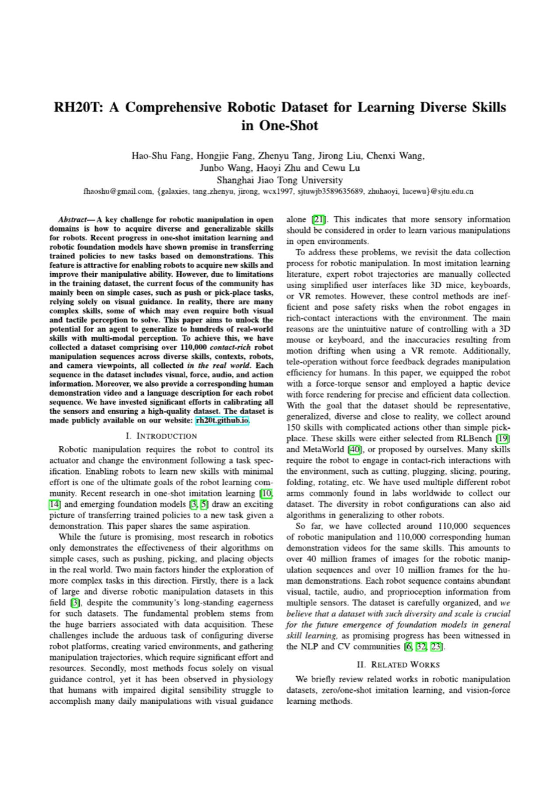
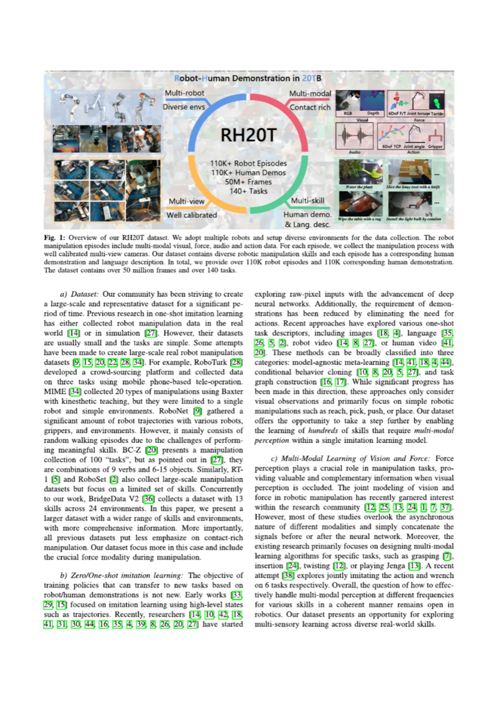
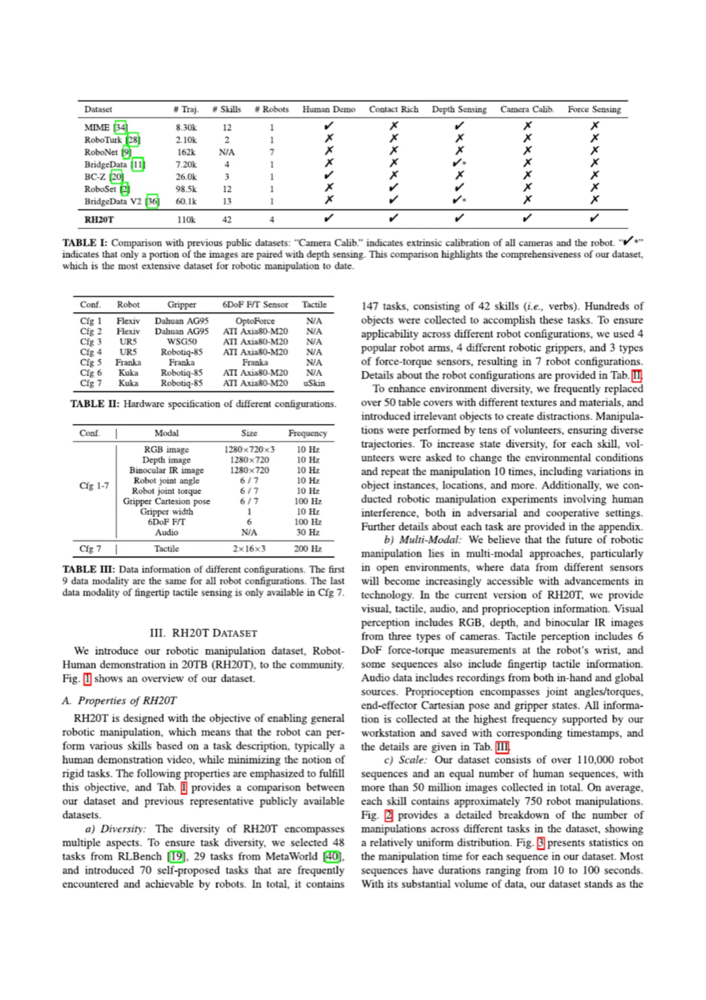
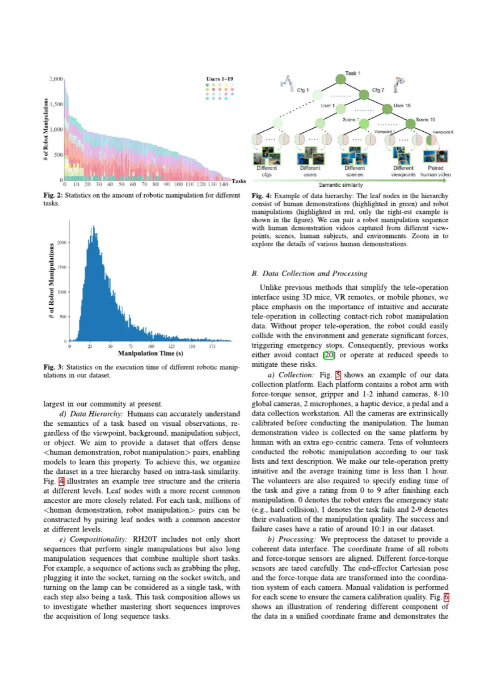
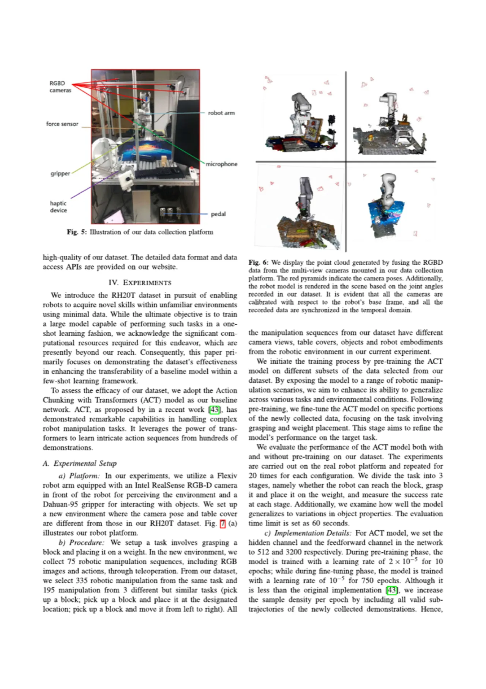

RH20T（Robot-Human Demonstration in 20TB）是一个包含超过 110,000 条真实世界机器人操控序列的大规模数据集。每条序列同步采集 RGB-D 视觉、6DoF 力/力矩、音频及本体感知信息，并附有对应的人类示范视频与语言描述，覆盖 147 项任务 / 42 种技能，横跨 7 种机器人配置。其设计目标是推动机器人在开放域中实现单样本（one-shot）技能迁移与多模态感知。
现有机器人操控研究主要停留在推送（push）、抓取（pick-place）等简单任务，且几乎仅依赖视觉（visual-only）反馈。然而现实中许多操控技能高度依赖力觉与触觉——如切割、旋转、插拔等 contact-rich 动作。造成这一差距的核心瓶颈有两个：（1）缺乏大规模多样化的真实机器人数据集；（2）现有方法忽略了视觉之外的多模态感知。
"In reality, there are many complex skills, some of which may even require both visual and tactile perception to solve. This paper aims to unlock the potential for an agent to generalize to hundreds of real-world skills with multi-modal perception."

与同类公开数据集的对比凸显了 RH20T 的全面性：MIME（8.3K 条）、RoboTurk（2.1K 条）、RoboNet（162K 条，但多为随机游走）、BC-Z（60.1K 条，技能单一）均无法同时覆盖多机器人、力觉感知、相机标定与人类示范等维度。RH20T 是目前社区中规模最大、模态最丰富的真实世界机器人操控数据集。
RH20T 的构建核心在于：设计直觉高效的力反馈遥操作平台，建立多模态多视角同步采集流水线，以及完善的数据层级结构（hierarchy），以支持密集的 <human demo, robot manipulation> 配对。

每套采集平台由机械臂（含力矩传感器与夹爪）、8-10 个全局 RGB-D 相机、2 个麦克风、1 个 haptic 设备（提供力反馈）和踏板组成。所有相机在采集前完成外参标定，数据通过时间戳对齐同步保存。人类示范在同一平台上由操作者佩戴第一视角相机完成。平均培训时间不足 1 小时，成功/失败比例约为 10:1。
关键创新是引入 haptic device 力反馈遥操作代替传统 3D 鼠标或 VR 遥控——后者在 contact-rich 任务中容易引起碰撞和紧急停止。力反馈使操作者能够精确感知接触力，显著提升了 contact-rich 技能（切割、插拔、折叠等）的数据质量。
RH20T 按照任务内相似度将数据组织成树状层级。叶节点为具体的人类示范（human demo）与机器人操控序列，共同祖先越近则相关性越强。这种层级设计支持为每条机器人序列配对来自不同视角、场景、操作者的多条人类示范，仅一项任务即可构建出数百万条 <human demo, robot manipulation> 配对样本。

论文以 ACT（Action Chunking with Transformers）作为 baseline，在真实机器人平台上验证 RH20T 数据集对迁移学习与少样本（few-shot）学习能力的提升效果。实验任务为"抓取方块并放置在砝码上"，在与 RH20T 不同摄像头视角、桌布纹理和机器人配置的新环境中评估。


实验系统对比了无预训练（不同 epochs）、仅同任务预训练、同任务+跨任务预训练三类设置，在 10 / 40 / 75 条示范规模下分别评估。结论清晰：无论示范数量多少，RH20T 预训练（尤其是多任务预训练）均能一致提升 Reach、Pick、Place 三个阶段成功率。值得注意的是，该实验所用 RH20T 数据与评估环境在相机视角、桌布、机器人配置上均不同，体现了数据集的跨域迁移价值。
论文明确指出："the cost of data collection is expensive"。RH20T 涉及多种机器人平台配置、大量人工遥操作、精密传感器标定，难以被资源有限的研究团队复制。这也是当前大规模真实世界机器人数据采集面临的共性挑战。
论文明确指出："the potential of robotic foundation models is not evaluated on our dataset"。作者尝试复现若干近期机器人基础模型的结果，但"haven't succeeded yet due to the limit of computing resources"。因此本文仅以 ACT 为 baseline 进行少样本评估，数据集对大规模基础模型的提升潜力有待后续研究验证。
当前 RH20T 主要覆盖单臂操控场景。论文展望未来工作时指出，希望将数据集扩展至 "broader robotic manipulation, including dual-arm and multi-finger dexterous manipulation"（双臂操控和多指灵巧手操控）。